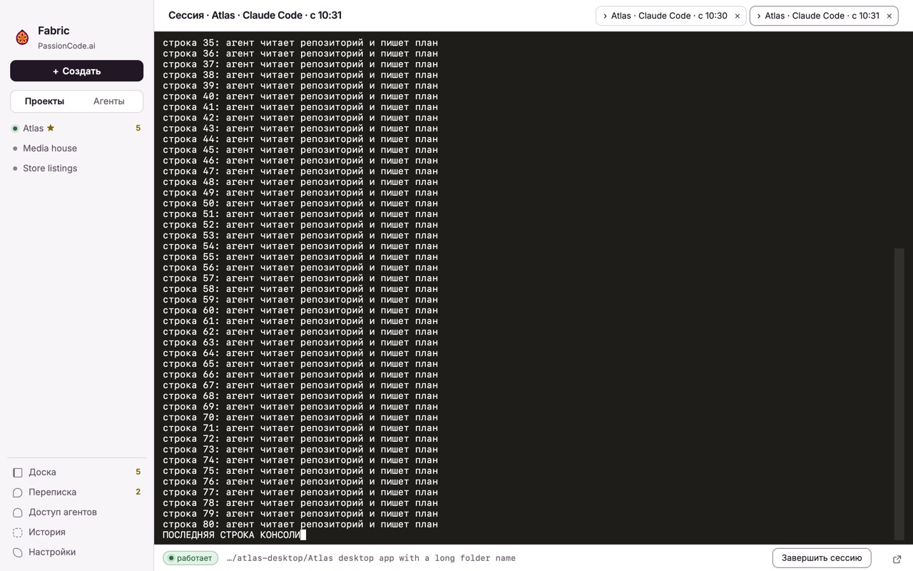
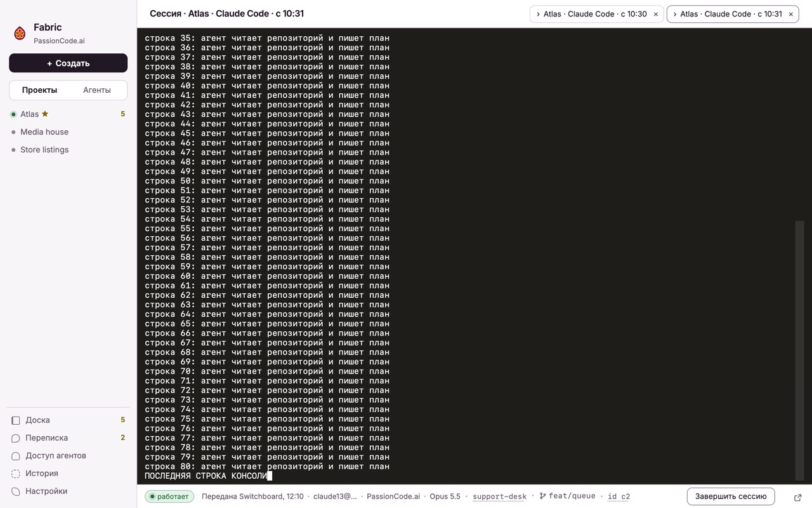

Заказ владельца 2026-11-20, 20:59: как в Fabric Dashboards, видеть у сессии аккаунт, кто её запустил, контекст, папку и ветку. Одна тонкая строка: кто и когда запустил, аккаунт (почта сокращена, целиком при наведении), организация, агент и модель, папка (нажать: открыть в Finder), ветка, id сессии и id агента (нажать: скопировать). Аккаунт и контекст берутся у Switchboard так же, как их читает Fabric Dashboards. Снимки со стенда экранов с одинаковыми данными; полоса панели крупно (2x), ниже экран целиком.

Проверка нашла, что в итерации 3 при 1280 px папка, ветка, организация и время запуска обрезались на той части, по которой их узнают. Исправлено: папка показывается своим именем (полный путь при наведении), агент уходит в подсказку, на строке остаётся модель; id агента виден на широком окне (от 1440 px), на узком только в подсказке и на странице агента; нажимаемое (папка, id) подчёркнуто пунктиром всегда; у id подписи «id» и «агент»; «Скопировано» говорится экранному диктору, ширина не прыгает.

design-review.md (design-tester по этим снимкам).